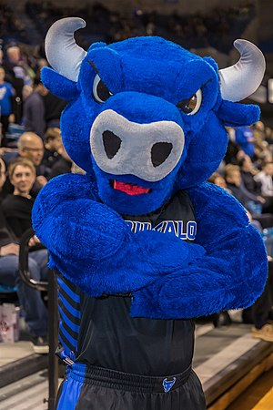

Buffalo Bulls
Victor E. Bull is the mascot for the Buffalo Bulls, the athletic teams of the University at Buffalo, the flagship of the State University of New York system, in Buffalo, New York, US. Victor is an anthropomorphic blue bull. Victor performs at all Buffalo Bulls home football and basketball games.
- In 2013, Victor reached the Elite Eight stage of the SUNY Mascot Madness competition, earning 49% of the vote against Baxter, the Binghamton Bearcat.
- In 2002, Victor E. Bull was chosen as a member of the Capital One All America Mascot Team.
- Victor was featured in a national television spot along with eleven other national collegiate mascots.

Index page